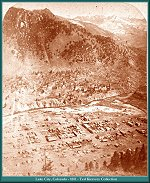
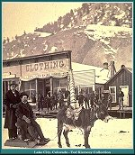
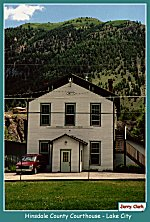
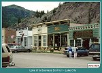
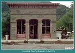
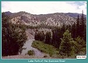
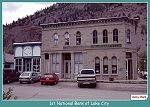
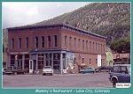

| Lake City is one of the most isolated major 19th century Colorado silver camps. Located on the eastern side of the San Juans, Lake City is the seat of Hinsdale County, the least populated county in the state. Prospecting began in the area around 1871, with good claims throughout the region. However, full development of the mines was dependent on cheap transportation of ore. |
| The Denver & Rio Grande began to survey a branch to Lake City in 1881. Grading was actually begun by the Fall of 1881, but soon stopped. It was not until 1889 that track laying on the Lake City branch was started. The first official train entered Lake City on August 15, 1889. |
| The Lake City branch was the location of the highest trestles on the entire Denver & Rio Grande narrow gauge. Bridge 343A, the "High Bridge", located 7 miles below Lake City, spanned the Lake Fork of the Gunnison for 800 feet at a height of 124 feet above the river. Bridge 340A over Elk Creek, 10 miles below Lake City, was over 200 feet long and 112 feet above the water. Both of these trestles were wooden decked and ballasted in 1896 to avoid the risk of fire. |
| The Lake City branch was served by Class 56 Consolidations, C-16 Consolidations (Class 60) and T-12 Ten Wheelers. The last D&RGW run on the branch prior to abandonment was made on May 25, 1933 by T-12 No. 168 and combine 214. Prior to scrapping, the owner of the Ute-Ulay Mine attempted to run the branch by leasing the right of way from the D&RGW and running it as the San Christobal Railroad. He used a railbus similar to the Rio Grande Southern Galloping Geese. Unfortunately, the Depression caused the Ute-Ulay Mine to close down in 1935. With the closure of the mine the SCRR faded away. |
| Lake City is located approximately 40 miles south of Gunnison on Colorado 149. The town is a center for fishing, hiking and jeeping in the San Juans. The Engineer and Cinnamon Pass jeep trails lead in and out of town. Four miles south of Lake City is Lake San Cristobal, the second largest natural lake in Colorado. Beyond Lake San Cristobal, Colorado 149 continues south up Slumgullion Pass. The views from the summit of the pass may be the best that can be seen from a paved highway in Colorado. Unfortunately, the only time I was able to get up to there it was foggy and raining, so there are no photos to show you. I guess you'll just have to see for yourself. You won't be sorry. |
|
 |
Lake City, Colorado
1881 (Image 00415) (195k) |
|
 |
A little before and after shot
Lake City, Colorado 1889 (Image 0004) (132k) |
|
 |
Hinsdale County Courthouse
(74k) |
|
 |
Lake City Business District
(94k |
|
 |
Hinsdale County Museum
(79k) |
|
 |
Lake Fork of the Gunnison River
(81k) |
|
 |
1st National Bank of Lake City
(78k) |
|
 |
Mammy's Restaurant
Lake City, Colorado (82k) |